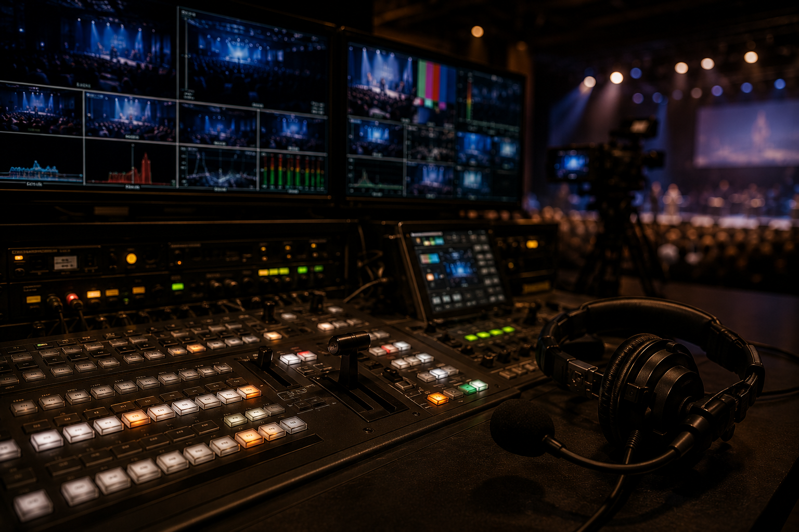
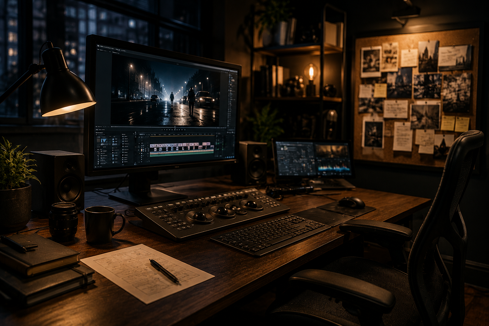

Events & Town Halls
Corporate town halls, executive broadcasts, leadership updates, employee communications events, and hybrid meetings.
Strategic communications production for events, stories, broadcasts, civic moments, and meaningful experiences.
Start a ConversationFreedom Productions helps organizations, leaders, communities, and mission-driven teams translate ideas, events, messages, and moments into organized, professional, emotionally resonant experiences.
We are not simply a production crew. We approach production as communication: what needs to be said, who needs to hear it, how it should feel, and what must happen behind the scenes so the message is delivered with clarity and dignity.
Freedom Productions supports corporate, civic, legal, nonprofit, educational, and creative environments where execution matters and the story behind the work cannot be lost.

Corporate town halls, executive broadcasts, leadership updates, employee communications events, and hybrid meetings.

Founder videos, brand storytelling, mission videos, website hero videos, interviews, scripts, and creative direction.

Recording coordination, video clip organization, post-event asset organization, narrative flow, and production documentation.
Production is not just cameras, microphones, and schedules. It is the discipline of helping people be seen, heard, understood, and remembered.
Freedom Productions helps clients think through the full experience — message, audience, format, speaker flow, technical execution, recording, and follow-through.
We support corporate events, civic gatherings, educational programs, panel discussions, livestreams, hybrid meetings, founder stories, oral histories, and legal or litigation-adjacent production environments.
The goal is not to overproduce. The goal is to make the message clear, the experience steady, and the people involved feel prepared.
Whether the audience is in the room, online, or both, successful production depends on sequencing, preparation, timing, contingency planning, and calm execution.
Freedom Productions brings structure to complex moments so leaders, speakers, and participants can focus on the message rather than the machinery.
For town halls, civic meetings, corporate events, livestreams, and community productions requiring both message clarity and operational execution.
For leaders and organizations needing polished internal or external communications delivered through video, broadcast, livestream, or hybrid formats.
For founders and mission-driven leaders who need narrative, script, interview structure, and video direction for brand or website use.
For families, organizations, founders, and communities preserving meaningful stories, memories, values, and lived experience.
For deposition recording, remote deposition coordination, exhibit display, hearings, mediations, video clip organization, and legal presentation support.
For events, recordings, legal support, storytelling, or communications needs that do not fit neatly into a standard category.
Freedom Productions supports oral histories, legacy interviews, personal story projects, community memory projects, archival storytelling, interview preparation, and story structure.
These projects are rooted in dignity, listening, and the belief that lived experience deserves to be remembered with care.
Strong production does not end when the event ends. Recordings, clips, notes, speaker materials, and follow-up assets all need to be organized so the value of the moment is not lost.
Freedom Productions helps clients preserve, refine, and reuse what matters.
If you would like to discuss an event, video, livestream, civic production, legal production support, or story-based media project, contact Freedom Productions.
Contact Freedom Productions